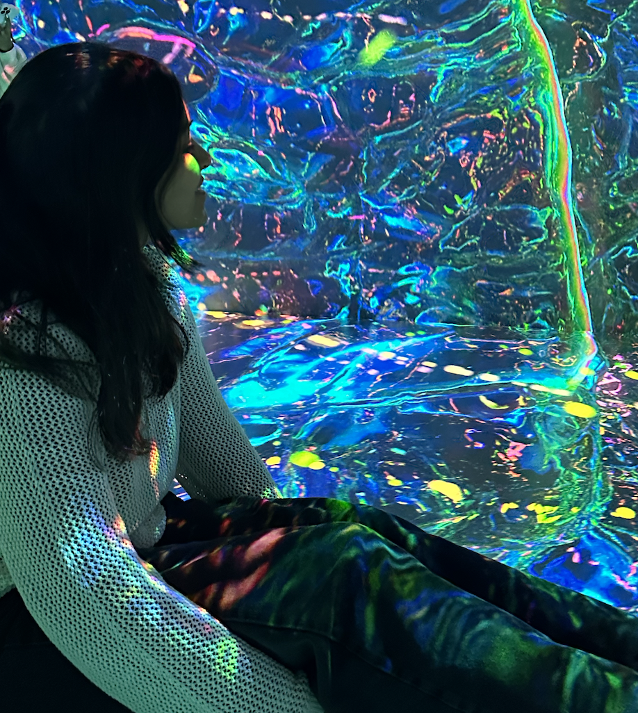

Hi! I’m Paridhi — a creative technologist based in New York. I graduated with a Bachelor’s in Design and Technology from Parsons School of Design.
I design and develop interactive interfaces and experiences that prompt observation, connection, and curiosity in the physical world and translate complex systems into human-scale interactions. I also focus on designing encounters with technology—moments where interfaces feel less like utilities and more like spaces for reflection, play, and learning. These works take many different forms, from AI-based web interfaces and narrative 3D worlds to spatial installations and sensor-based physical experiences.
I’ve previously collaborated with IBM Quantum and the DLR Institute for AI Safety and Security to create interactive exhibits that make quantum computing tangible for broader audiences.